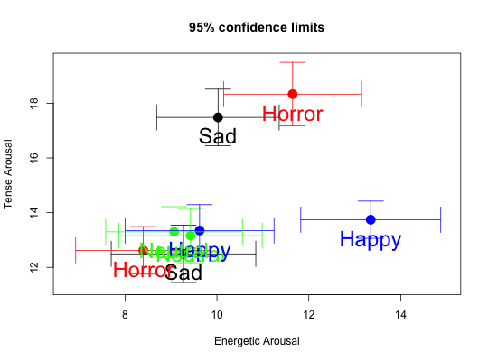

Given two vectors of data (X and Y), plot the means and show standard errors in both X and Y directions.
error.crosses(x,y,labels=NULL,main=NULL,xlim=NULL,ylim= NULL, xlab=NULL,ylab=NULL,pos=NULL,offset=1,arrow.len=.2,alpha=.05,sd=FALSE,add=FALSE, colors=NULL,col.arrows=NULL,col.text=NULL,...)
| x | A vector of data or summary statistics (from Describe) |
|---|---|
| y | A second vector of data or summary statistics (also from Describe) |
| labels | the names of each pair -- defaults to rownames of x |
| main | The title for the graph |
| xlim | xlim values if desired-- defaults to min and max mean(x) +/- 2 se |
| ylim | ylim values if desired -- defaults to min and max mean(y) +/- 2 se |
| xlab | label for x axis -- grouping variable 1 |
| ylab | label for y axis -- grouping variable 2 |
| pos | Labels are located where with respect to the mean? |
| offset | Labels are then offset from this location |
| arrow.len | Arrow length |
| alpha | alpha level of error bars |
| sd | if sd is TRUE, then draw means +/- 1 sd) |
| add | if TRUE, overlay the values with a prior plot |
| colors | What color(s) should be used for the plot character? Defaults to black |
| col.arrows | What color(s) should be used for the arrows -- defaults to colors |
| col.text | What color(s) should be used for the text -- defaults to colors |
| … | Other parameters for plot |
For an example of two way error bars describing the effects of mood manipulations upon positive and negative affect, see http://personality-project.org/revelle/publications/happy-sad-appendix/FIG.A-6.pdf
The second example shows how error crosses can be done for multiple variables where the grouping variable is found dynamically. The errorCircles example shows how to do this in one step.
To draw error bars for single variables error.bars, or by groups error.bars.by, or to find descriptive statistics describe or descriptive statistics by a grouping variable describeBy and statsBy.
A much improved version is now called errorCircles.
#just draw one pair of variables desc <- describe(attitude) x <- desc[1,] y <- desc[2,] error.crosses(x,y,xlab=rownames(x),ylab=rownames(y))#now for a bit more complicated plotting data(bfi) desc <- describeBy(bfi[1:25],bfi$gender) #select a high and low group error.crosses(desc$'1',desc$'2',ylab="female scores",xlab="male scores",main="BFI scores by gender")abline(a=0,b=1)#do it from summary statistics (using standard errors) g1.stats <- data.frame(n=c(10,20,30),mean=c(10,12,18),se=c(2,3,5)) g2.stats <- data.frame(n=c(15,20,25),mean=c(6,14,15),se =c(1,2,3)) error.crosses(g1.stats,g2.stats)#Or, if you prefer to draw +/- 1 sd. instead of 95% confidence g1.stats <- data.frame(n=c(10,20,30),mean=c(10,12,18),sd=c(2,3,5)) g2.stats <- data.frame(n=c(15,20,25),mean=c(6,14,15),sd =c(1,2,3)) error.crosses(g1.stats,g2.stats,sd=TRUE)#and seem even fancy plotting: This is taken from a study of mood #four films were given (sad, horror, neutral, happy) #with a pre and post test data(affect) colors <- c("black","red","green","blue") films <- c("Sad","Horror","Neutral","Happy") affect.mat <- describeBy(affect[10:17],affect$Film,mat=TRUE) error.crosses(affect.mat[c(1:4,17:20),],affect.mat[c(5:8,21:24),], labels=films[affect.mat$group1],xlab="Energetic Arousal", ylab="Tense Arousal",colors = colors[affect.mat$group1],pch=16,cex=2)